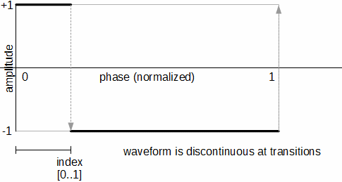
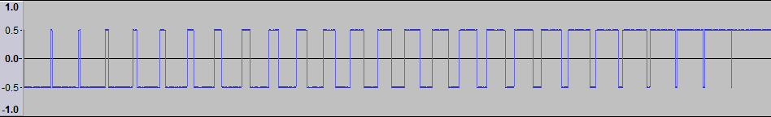

Pulse Oscillator
The pulse oscillator provides the functionality of the variable pulse width waveform generators from the analog world. The cycle always starts at the high value (+1) at phase 0. The index parameter of the oscillator modulates the position (phase) in the waveform cycle where the transition to low value (-1) occurs:

Figure 1: Pulse Parameterization
A value of 0.5 corresponds to a square wave, with intermediate timbres available at other values. A value of 1 or 0 produces silence (with dc offset) since the resulting wave is at either the high value or the low value at all points in the cycle. Sweeping the parameter smoothly from 0 to 1 results in a transition such as:

Figure 2: Pulse Index Sweep
The pulse example can be downloaded.